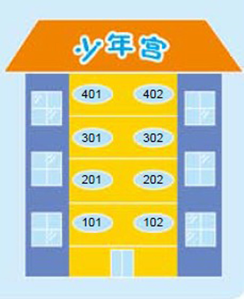
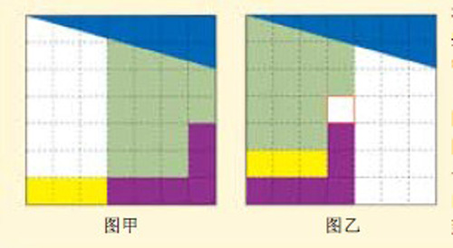
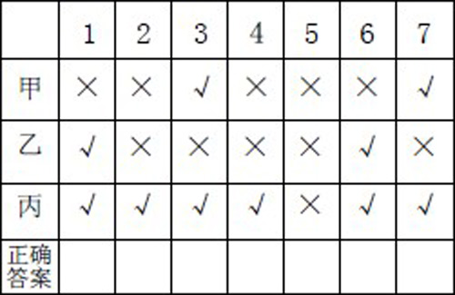
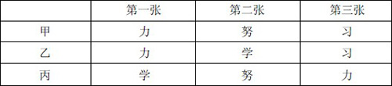
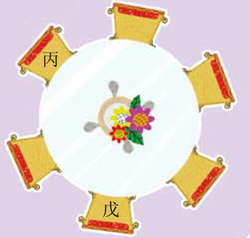
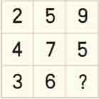
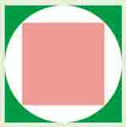
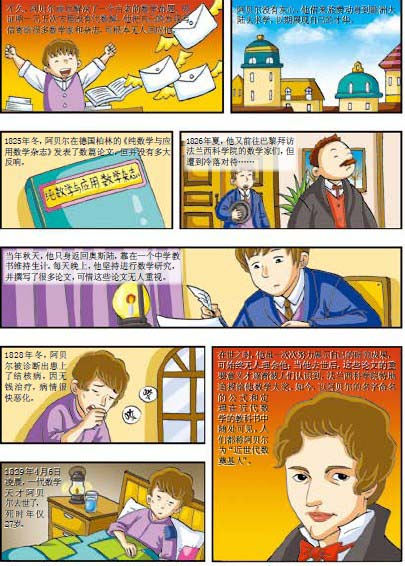
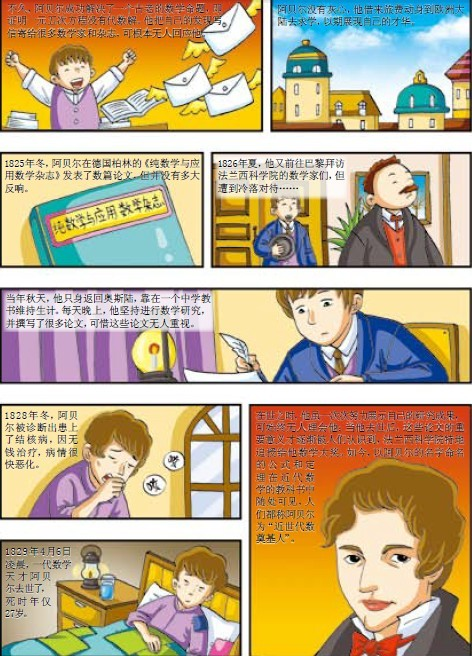

在数学的天地里，重要的不是我们知道什么，而是我们怎样知道。
——古希腊数学家毕达哥拉斯
桌子上有四个杯子，每个杯子上均写有一句话，如果其中只有一句是真话，那么，下列描述中，正确的是（ ）。
A.所有的杯子中都有水果糖
B.所有的杯子中都没有水果糖
C.有些杯子中没有水果糖
D.第三个杯子中有巧克力
E.第二个杯子中有苹果
若“大大小小小大小小大”对应
2 2 1 1 1 2 1 1 2
则“大大小小大小小大”对应于（ ）。
A.2 2 1 2 2 1 1 1 2 2
B.2 2 1 1 2 1 2 2
C.2 2 1 1 2 1 1 2
D.1 1 2 2 1 2 2 1 1
E.2 1 2 2 1 1 2 1 2
一个袋子里有四个球，一个黑色，一个白色，其余两个为红色（大小不一样）。一个人打开口袋，取出了两个球。他看了看这两个球，并说其中一个是红色的，则另一个球是红色的可能性是多少？
一天晚上，月黑风高，两个探险家为了抄近路，决定从宽三千米的山谷中穿过。他们走了很久，按时间计算应该到达目的地了，但每次总是莫名其妙地回到出发点附近，这就是人们经常所说的“鬼打墙”。你相信真有这回事吗？
五个人站成一列纵队，从五顶黄帽子和四顶红帽子中，取出五顶分别给每个人戴上。他们不能扭头，所以只能看见前面的人头上的帽子的颜色。
开始的时候，站在最后的第五个人说：“我虽然看到你们头上的帽子的颜色，但我还是不能判断自己头上的帽子的颜色。”这时，第四个人说：“我也不知道。”第三个人接着说：“我也不知道。”第二个人也说不知道自己的帽子颜色。这时，第一个人说：“我戴的是黄帽子。”
你知道第一个人是怎么判断的吗？
一群人开舞会，每人头上都戴着一顶帽子。帽子只有黑白两种，黑的至少有一顶。每个人都能看到其他人帽子的颜色，却看不到自己的。主持人先让大家看看别人头上戴的是什么帽子，然后关灯，如果有人认为自己戴的是黑帽子，就拍手一次。第一次关灯，没有声音。于是再开灯，大家再看一遍，关灯时仍然鸦雀无声。一直到第三次关灯，才有噼噼啪啪的拍手声响起。你知道，舞会上有多少人戴着黑帽子吗？
一天，国王召阿凡提进宫，煞有介事地问阿凡提：“阿凡提先生，听说你经常在外面讲我的坏话，这样吧，素闻你聪明非常，我这里有一个问题，你若能解答出来，我就恕你无罪，如果答不出来，那就加重处罚。”原来，国王想以此为借口报复阿凡提。国王让人拿来了三个盒子，然后说：“这三个盒子中只有一个盒子里放有一颗珍珠。每个盒子上各写着一句话，但只有一句真话，其余都是假话。你给我找出珍珠在哪个盒子里。”阿凡提一看：
动物王国的一些居民忘记今天星期几了，于是聚在一起讨论。
他们之中只有一个讲对了，是哪一个呢？今天到底是星期几呢？
甲、乙、丙、丁四个孩子在操场上赛跑，一共赛了四次。其中，甲比乙快的有三次，乙比丙快的也有三次，丙比丁快的也是三次。或许大家会想到丁一定是最慢的。可事实上这个判断是错误的，在这四次中，丁也比甲快三次。这是怎样一种情况呢？

少年宫一至四楼的八个房间分别是音乐、舞蹈、美术、书法、棋类、电工、航模、生物八个活动室。
已知：
（1）一楼是舞蹈室和电工室；
（2）航模室上面是棋类室，下面是书法室；
（3）美术室和书法室在同一层楼上，美术室的上面是音乐室；
（4）音乐室和舞蹈室都设在单号房间。
请分别指出图中八个活动室的房间号码。

法国的一位魔术师发现了这样一个奇怪的现象：一个正方形被分割成几小块后，重新组合成一个同样大的正方形时，它的中间却多了个洞！
他把一张方格纸贴在纸板上，按图甲画上正方形，然后沿图示的颜色切成五小块。当他照图乙的样子把这些小块拼成正方形的时候，中间真的出现了一个洞！
图甲的正方形是由四十九个小正方形组成的，图乙的正方形却只有四十八个小正方形。究竟出了什么问题？那一个小正方形到底到哪儿去了？
初一有三个班，每班有正、副班长各一人。平时开班长会议时，各班都只有一人参加。第一次参加的是小张、小刘、小林；第二次参加的是小刘、小朱、小宋；第三次参加的是小张、小宋、小陈。你知道他们中哪两个人是同班的吗？

甲、乙、丙三个人回答同样的七道正误判断题，按规定凡答案是对的，就打一个“√”，答案是错的，就打一个“×”。回答结果发现，这三个人都只答对五题，答错两题。三人答题的情况如下所示，你能由表格中内容，判断出各题的正确答案吗？
有一位牧羊人在某地放牧若干天，这期间的气候情况是：
一、上午和下午共下了七次雨。
二、如果下午下雨，整个上午全晴天。
三、有五个下午晴天。
四、有六个上午晴天。
你能根据以上信息判断出他一共放牧了几天吗？

四张卡片上分别写着“努、力、学、习”四个字（一张写一个）。取出其中三张扣在桌面上，甲、乙、丙分别猜每张卡片上是什么字，具体如下表：
结果每张上的字至少有一人猜中，所猜三次中，有一人一次也没猜中，有两人分别猜中了两次和三次，问：这三张卡片上各是什么字？
明明、冬冬、蓝蓝、静静、思思和毛毛六人参加一次会议，见面时每两人都要握一次手，明明已握了五次手，冬冬已握了四次手，蓝蓝已握了三次手，静静已握了两次手，思思握了一次，问毛毛已经握了几次手？
陈、李、王三位老师担任五（1）班的语文、数学、英语、体育、音乐和美术六门课的教学，每人教两门，现在知道：
（1）英语老师和数学老师是邻居；
（2）李老师最年轻；
（3）陈老师喜欢和体育教师、数学老师交谈；
（4）体育老师比语文老师年龄大；
（5）李老师、音乐老师、语文老师三人经常一起去游泳。
根据以上信息，你能分析出每个人分别教的是哪两门课吗？
已知张老师、李老师、刘老师三人在北京、上海、广州三地的中学教不同的课程：数学、语文、外语；又知道：张老师不在北京工作，李老师不在上海工作，在北京的不教外语，在上海工作的教数学，李老师不教语文。
你能由此判断出三位老师各在哪个城市、各教什么课程吗？
小胖去观看比赛，回学校后，他告诉同学们有穿红、黄、蓝、白、紫五种不同运动服的五支运动队参加长跑比赛，让A、B、C、D、E五个小朋友猜各队的名次，每人只准猜两支运动队的名次，同学们猜比赛名次的情况如下：
A猜：紫队第二，黄队第三。
B猜：蓝队第二，红队第四。
C猜：红队第一，白队第五。
D猜：蓝队第三，白队第四。
E猜：黄队第二，紫队第五。
猜完后，他们发现每人都猜对了一个队的名次，并且每队的名次只有一人猜对。你能根据以上信息判断出他们各猜对了哪个队的名次吗？
几个少先队员要去宾馆采访一位科学家，可他们不知道科学家姓什么，看门的老伯伯说了下面一段话，请他们猜猜科学家姓什么。老伯伯说，二楼住着李姓、王姓、张姓的三位科技会议代表，一位是科学家，一位是技术员，一位是科学杂志编辑。二楼还住着三位来自不同地方的旅客，也分别姓王、李、张。已知：
（1）姓李的旅客来自北京。
（2）技术员在广州一家工厂里工作。
（3）姓王的说话有口吃的毛病。
（4）与技术员同姓的旅客来自上海。
（5）技术员和一位教师旅客来自同一个城市。
（6）姓张的代表比赛乒乓球总是输给编辑。
根据上述信息，你知道科学家到底姓什么吗？
抽屉里有黑白袜子各十只，如果你在黑暗中伸手到抽屉里，最少要取出几只，才一定会有一双颜色相同的呢？
有两个瓶子，一个瓶子装满了牛奶，一个瓶子装满了可可。有甲、乙、丙三只杯子，每只杯子的容积为瓶子容积的三分之一，希望能将牛奶和可可均匀调配好，应该怎么办？
有一个盛有900毫升水的水壶和两个空杯子，一个能盛500毫升，另一个能盛300毫升。请问：应该怎样倒水，使得每个杯子都恰好有100毫升水？（注意：不允许使用别的容器，也不允许在杯子上作记号）
有10个袋子，每袋有10枚金币，每个金币重10克，但有一袋是假金币，假金币每枚重11克，现在有一个磅秤，但只能称一次，现在完全不知道哪一袋是假的！怎样找出那袋假金币呢？

甲、乙、丙、丁、戊、己六人围着一张圆桌打牌，已知戊与丙相隔一人，且在丙的右面（如图），丁坐在甲对面，己与甲不相邻，乙在己的右面。写出甲、乙、丁、己各坐在什么位置？
甲、乙、丙、丁四人在一起，交谈时发生了语言困难，在汉、英、法、日四种语言中，每人只会两种，可惜没有大家都会的语言，只有一种语言是三个人都会的。已知：
（1）乙不会英语，但当甲与丙交谈时，却要请他当翻译。
（2）甲会日语，丁不懂日语，但两人能相互交谈。
（3）乙、丙、丁三人想相互交谈，却找不到大家都会的语言。
（4）没有人既能用日语讲话，又能用法语讲话。
根据上述信息，你能判断出甲、乙、丙、丁四人各自会说哪两种语言吗？
三头牛和三只虎要渡到河对岸，渡口只有一条小船，每次只能运装两头过河，且不能空船回来，为了防止虎吃牛，在一边岸上及船上的牛的头数绝不能少于虎的数量。应该怎样渡河才能保证牛的安全且要求渡河次数最少？
国王有两个女儿—总是说真话的阿米丽雅和总是说假话的蕾拉。其中有一个已经结婚了，另一个还没有。但国王一直没有公开这门婚事，就连是哪一个女儿结婚了也还是秘密。为了给另一个女儿也找到合适的驸马，国王举行了一场比武会，胜者可以说出他希望娶的公主的名字。如果公主是单身，那第二天他们就能成婚。国王说他可以向某一个公主问一个问题，但问题不能超过五个字。而且人们也并不知道那个公主叫什么名字。他该问什么问题？
有六只狼过河。其中母子分为一队，分三队。第一队母子都会划船；第二队妈妈会，孩子不会；第三队妈妈会，孩子不会。有一只船，每次只可以坐两只，狼妈妈要保护自己的孩子，不然别的母狼就会吃掉它的孩子，该怎么办呢？
有一个农夫带着一条狗、一只鹅和一棵白菜来到河边。这时河边有一只小船，但是这只船太小了，每次只能乘上农夫，再带上另外一种物品，或者是狗，或者是鹅，或者是白菜。但是，如果农夫不在的话，狗就会咬鹅，鹅会吃白菜。幸运的是这条狗并不吃白菜。那么，这位农夫将怎样巧妙地安排这次的渡河呢？
三名侦察兵在徒步行进中必须过河到对岸，但没有桥，对他们来说，这是一件难办的事。这时，河上有两个孩子在划一只小船，他们想帮助侦察兵。可是，船太小了，只能承载一名侦察兵，如再加上一个孩子就会把小船弄沉，而且三个侦察兵都不会游泳。
看来，在这样的条件下，就只能有一名战士乘小船渡到对岸去。可事实却是，三名战士都很快地顺利到达了对岸，并把小船交还给了孩子们。他们是怎样做到的呢？
一个男子把自己的五个调皮孩子交给摆渡者，让他必须把孩子们全部送到河对岸，且每次到达对岸的孩子数要尽可能最少，以保证每个孩子单向往返的次数相同。孩子们的年龄都不相同，且摆渡者一次最多只能带两个孩子渡河。但是，摆渡者不在场的情况下，任何两个年龄邻近的孩子不能待在一起，因为他们很可能会打起架来，另外只有摆渡者会划船。那么，摆渡者至少需要往返多少次才能把孩子全部送到河对岸呢？
一艘载有25人的轮船在一座小岛附近触礁了，20分钟后即将沉没。这时，船上只有一条救生艇可用。已知救生艇最多只能装载5人，到达小岛需要的时间是4分钟。请你计算一下，如果只用这条救生艇，最多能营救多少人？是否还要采取其他营救措施？
在漆黑的夜里，四位旅行者来到了一座狭窄而且没有护栏的桥边。如果不借助手电筒的话，大家是无论如何也不敢过桥去的。不幸的是，四个人一共只带了一个手电筒，而桥窄得只够让两个人同时通过。如果各自单独过桥的话，四人所需要的时间分别是一分钟、两分钟、五分钟、八分钟；而如果两人同时过桥，所需要的时间就是走得比较慢的那个人单独行动时所需的时间。请你设计一个方案，让他们过桥用的时间最少。
冰融化成水后，它的体积减少十二分之一，那么当水再结成冰后，它的体积会增加多少呢？
张三和李四是在一家健身俱乐部首次相遇并相互认识的。
（1）张三是在一月份的第一个星期一那天开始去健身俱乐部的。此后，张三每隔四天（即第五天）去一次。
（2）李四是在一月份的第一个星期二那天开始去健身俱乐部的。此后，李四每隔三天（即第四天）去一次。
（3）在一月份的三十一天中，只有一天张三和李四都去了健身俱乐部，正是那一天他们首次相遇。
张三和李四是在一月份的哪一天相遇的？（提示：先判定李四是在张三之前还是之后开始去健身俱乐部的；然后判定张三和李四是从哪一天开始去健身俱乐部的）
有24斤油，今只有盛5斤、11斤和13斤的容器各一个，如何才能将油分成三等份呢？

问号处应填几呢？
A和B是两个斤斤计较的小人。他们要平分一杯酒。应该怎么分才能使A、B两人都觉得公平而没有意见？简单的办法是：由A倒酒，由B挑选。即由A往杯里慢慢倒酒，直到认为自己无论分到哪一杯都不吃亏为止；然后，让B从这两杯酒当中任选一杯。余下来的一杯归A，谁也不会有意见。现在，有一杯酒要平分给A、B、C、D四人，要怎么分，才能使大家都觉得公平？
有一个装有4升牛奶的奶罐，你需要把这4升牛奶平分给两位同伴，可是你只有两个空奶罐：一个能容1.5升，另一个能容2.5升。有什么办法能用这三个奶罐把4升牛奶分成两半，看来只好把牛奶在三个罐子里翻倒几次了，可是该怎样翻倒呢？
我的抽屉里放着一些红袜子和黑袜子，两种颜色袜子的数目相等。
我的朋友问我，为了保证取出一双同样颜色的袜子，你闭着眼睛至少要从抽屉里摸出多少只袜子？我想了一下，告诉他一个数目。我的朋友又问我，为了保证取出两只不同颜色的袜子，你闭着眼睛至少要从抽屉里摸出多少只袜子？我想了一下，又告诉他一个数目。
我的朋友表示惊奇：“这两个数目是一样的？”我确认：“是的。”假设我的计算是完全正确的，想想看，抽屉里有多少只袜子呢？
一家药店收到外地运来的某种药品十瓶。每瓶装药丸一千粒，每粒药丸的限定重量为100毫克。药剂师怀特先生刚把药瓶放上货架，制药厂的一封电报接踵而来。
怀特先生给药店经理布莱克小姐念了这份电报：“特急！所发药品经检查后方能出售。由于失误，有一瓶药丸每粒超重10毫克。请立即将分量有误的那瓶药退回。”
怀特先生很气恼：“倒霉极了，我只好从每瓶中取出1粒来称一下。真是胡闹。”
怀特先生刚要动手，布莱克小姐拦住了他：“怀特先生，请等一下，没有必要称十次。”
这有可能吗？
在四个球中，有一个坏球的重量与其他的球不一样，也不知是比其他球轻还是重，如果你有一架天平（没有砝码，只能比较两边的轻重），能在两次测量中找出这个坏球吗？
有7公斤、2公斤的砝码和一架天平，只准使用三次天平，要求把140公斤的盐分成90公斤和50公斤。快来动动脑筋吧！
有一位疯狂的艺术家为了寻找灵感，把一张厚为0.1毫米的很大的纸对半撕开，重叠起来，然后再撕成两半叠起来。假设他如此重复这一过程25次，这叠纸会有多厚？
A.像山一样高
B.像一个人一样高
C.像一栋房子一样高
D.像一本书那么厚

图中是一个大的正方形，正方形里面有一个圆，圆里面还有个正方形。问题非常简单：最外面的正方形的面积为50平方厘米时，圆里面的正方形的面积是多少？


九连环
九连环是一种源于中国的传统智力玩具。这种古老玩具曾经在民间极为普及。它包含着九个相同的圆环及一把“剑”，玩法是把九个圆环全套上或卸下。九连环的制作形式多样，一般是用金属丝制成圆形小环九枚，九环相连，套在条形横板或各式框架上。九连环的解法多样，可分可合，变化多端。得法者需经过八十一次上下才能将相连的九个环套入一柱，再用二百五十六次才能将九个环全部解下。解九连环需要相当一段时间，这无疑是对人的逻辑分析能力和耐心的绝佳训练。不少人认为能解此环是智慧的象征。
拆解九连环有一个二十字口诀：上俩下一个，再动后一个；上一个下俩，再动后一个。依照此口诀，解开九连环并非难事。
独立钻石棋
独立钻石棋也叫单身贵族，国内称之为孔明棋。它源于18世纪法国的宫廷贵族，是一种自我挑战的游戏，可以锻炼逻辑思维能力。
独立钻石棋的玩法是在棋盘33孔中，每孔都放下一棋，但是棋盘中心的一孔是空着的。玩的时候是像跳棋一样行子。一棋子依直线在平行或垂直（不能依斜线）的方向跳过一棋子，而放在此棋子之后的一个空格内。故此，棋子后必要有空的孔才可跳过。每次棋子跳去一个空孔，被跳过的棋便移离棋盘，这时棋盘上便少了一只棋子。如此一直玩下去，使剩下来的棋子越少越好。
小学数学学习经验谈
“兴趣是最好的老师。”做任何事情，只要有兴趣，就会积极、主动去做，就会想方设法把它做好，这句话对小学数学学习尤其适用。
要培养数学学习的兴趣，首先要掌握数学基础知识和基本技能。有的同学老想做难题，看到别人上奥数班，自己也要去。如果这些同学连课内的基础知识都掌握不好，在里面学习也只能滥竽充数，对学习并无太大帮助，反而使自己失去学习数学的信心。我建议同学们可以多看一些数学名人小故事、趣味数学游戏等书籍来提高兴趣，增强学习的自信心。